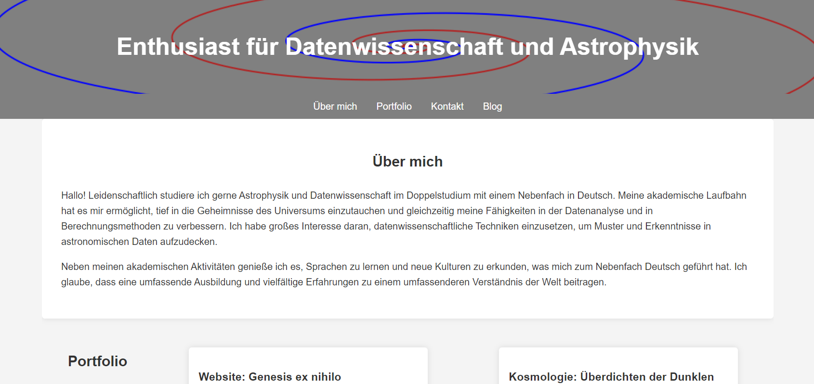
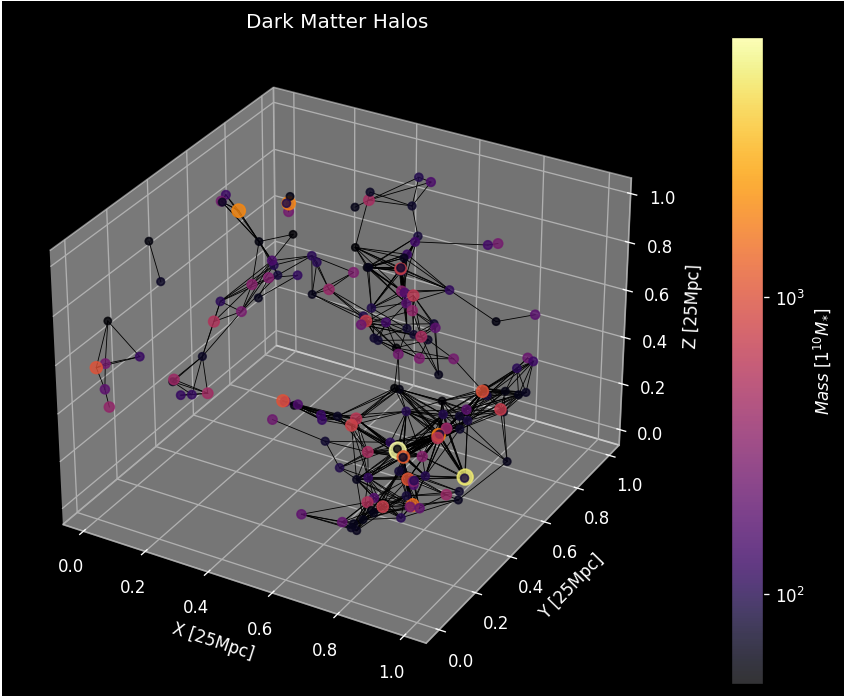
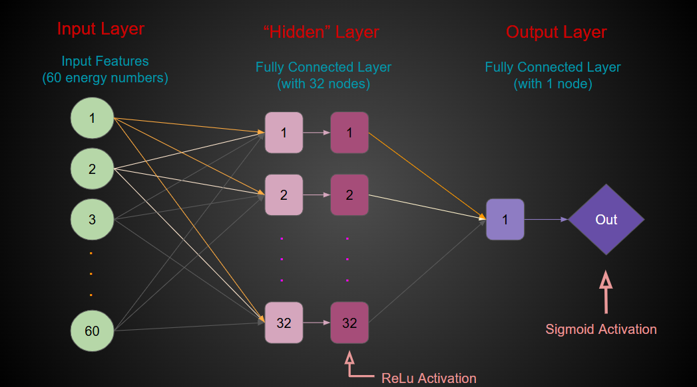

About Me
Hello! I am a passionate astrophysics, physics, and data science triple major with minors in Math and German. My academic journey has allowed me to delve deep into the mysteries of the universe while honing my skills in data analysis and computational methods. I have a unique interest in using data science techniques to uncover patterns and insights in astronomical data. In addition to my academic pursuits, I enjoy learning languages and exploring new cultures, which led me to minor in German. I believe that a well-rounded education and diverse experiences contribute to a richer understanding of the world.
Portfolio
Website: Genesis ex nihilo
In order to have a place to document my findings and express analytical strategies and techniques, I created this entire website by hand from scratch. I included knowledge of both key data science and astrophysical concepts, such as a working, animated model of the infamous double pendulum, and various maps and graphs using matplotlib and geopandas.
Cosmology: Dark Matter Overdensities
While collaborating with a series of graduate, undergraduate, and professional peers, a groundbreaking model using PyTorch's machine learning was created to map and express linear overdensities in dark matter throughout the universe. Translationally and rotationally invariant features were then added to account for orientation details.
Skillset: A Showcasing
Look at some fun, interactive links on this website! They each showcase different topics and skills.
The Space Quiz page features a small animation and a quiz about space and astronomy you can take.
The Meteorite Page features an interactive map of meteorite landings and a graph of meteorite data.
The Sonar ML Page features a neural network for binary classification that predicts whether an object is a Rock or a Mine.
Contact
If you have any questions or would like to connect, feel free to reach out to me via the following methods:
- Email: erich.manter@gmail.com
- Handshake: Handshake Profile
- LinkedIn: LinkedIn Profile
Blog
Stunning JWST Galaxy

After significant spectral analysis, JWST's NIRCAM sighted a galaxy (JWST-7329) at a redshift of 3.2 whose stars formed at a redshift of 11 when insufficient local dark matter mass was present to allow such structures, once again raising questions about the current understanding of galaxy formation.
German Club Presidency

I’m pleased to announce that I will once again be the president of German Club located at the University of Wisconsin-Madison for the 2024-2025 academic year.
Project: Advancement

I have the honor to collaborate with Professors Elena D'Onghia and Nick Stone at of the University of Wisconsin-Madison on a project that will investigate galactic dynamics with relevance to barred galaxies.